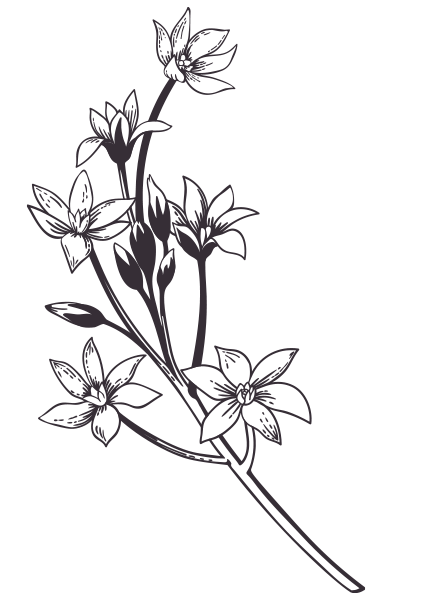
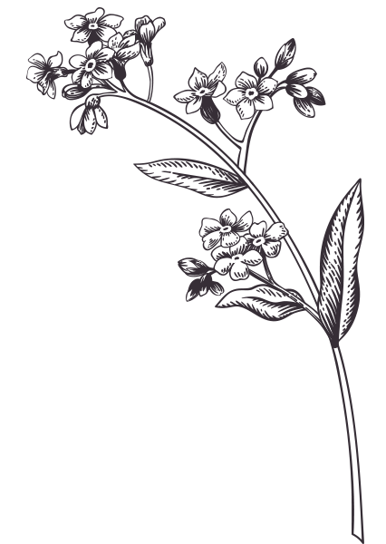

Liten pakke:
Vår- og sommerstell
Kr 2290,-
Marianne Holt | Gartner Øvre Romerike
Eg heiter Marianne Holt og har jobba som gartner i 28 år, dei siste 18 åra i ein privat parkhage. No vil eg hjelpe deg som ønsker ein pen, funksjonell og lettstelt uteplass – eller ein vakker gravplass.
Eg bur i Eidsvoll og jobber hovudsaklig på Øvre Romerike.


Eg ønsker at ei grav skal vere vakker og velstelt. Men eg diskuterer gjerne farge og uttrykk, utfrå ønsker og behov. Vatning i løpet av sesongen blir vi einige om.
Eg set istand gravplassen ved å rette opp kantar, forbetre jorda og langtidsgjødsle. Sender bilde på sms etter kvart besøk.
Vår- og sommerstell
Kr 2290,-
Vår-, sommer- og hauststell
Kr 2890,-
Vår-, sommer-, haust- og julestell
Kr 3490,-
I tillegg kan eg få sørga for vask, forgylling og oppretting av stein. Eigen avtale.
Eg kan gi eit prisoverslag før eg startar, men jobber helst på timar. Timepris 900,- inkl mva
Marianne Holt
Telefon: 45217867
marianneholt.gartner@gmail.com